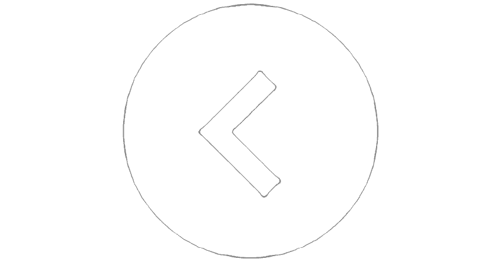

Workshop
TerugDe workshops worden gehouden in groepjes van minimaal 3 tot maximaal 8 personen. Groepen groter dan 8 personen is mogelijk maar wel in overleg.
De workshop kan ook bij u thuis of op locatie gehouden worden.
De tarieven hiervoor hangen af van het aantal personen en de duur van de workshop.
Om de workshops goed te laten verlopen, dient de ruimte over het een en ander te beschikken zoals: warm en koud stromend water, tafels, stoelen, goede verlichting en stroomvoorziening.
Gebruikt u normaal gesproken een leesbril, dan is het verstandig die naar de workshop mee te nemen, want ook hier zult deze goed kunnen gebruiken.
Om de workshop beter te laten verlopen, is het handig om van te voren na te denken over het ontwerp/idee wat u zou willen maken.
Er zijn op internet veel voorbeelden te vinden van sieraden die gemaakt zijn van zilverklei. Bij de bibliotheek zijn ook Nederlandse boeken te vinden over sieraden gemaakt met Art Clay Silver.
Wat ook heel leuk is om zelf te maken, zijn de chunks van zilverklei. Je eigen originele chunks, helemaal naar eigen ontwerp. Deze worden op drukkers gemaakt die ook op de "Noosa" armbanden passen.
Volwassenen en kinderen (vanaf 10 jaar) kunnen de chunks gemakkelijk maken. Dus ook een leuk idee voor een verjaardagspartijtje.